Dasheng Multi-Form Smart Car & Robotic Arm
Comprehensive Step-by-Step English Assembly Guide for the ABS Chassis & Acrylic Robotic Arm Kit (Model Version: 2024.07.08)
📘 Overview & Chassis Modes
Pages 1 – 6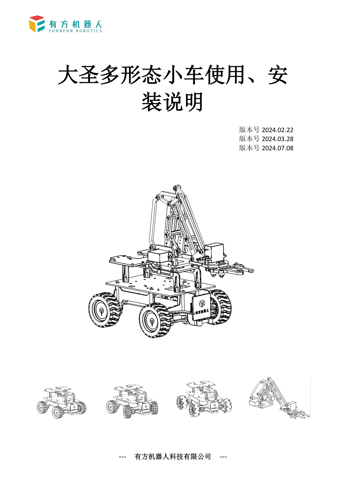
Dasheng Multi-Form Smart Car Assembly Instructions
Company: Youfang Robot Technology Co., Ltd. (有方机器人科技有限公司)
Document Title: Dasheng Multi-Form Smart Car Operating & Assembly Instructions (ABS Material Edition)
Version History: 2024.02.22 / 2024.03.28 / 2024.07.08
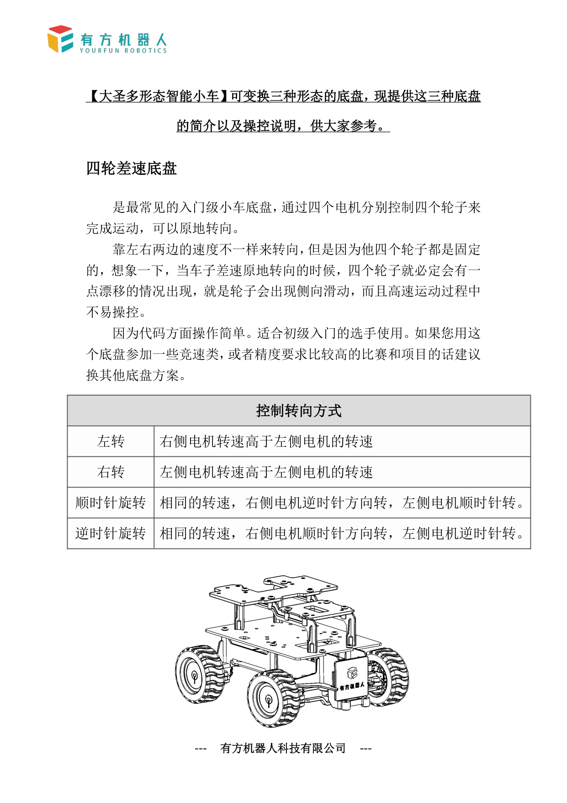
4-Wheel Differential Drive Chassis Overview
The 4-Wheel Differential Drive mode is the most common entry-level robot chassis structure. It controls 4 independent motors to drive each wheel individually, allowing zero-radius pivot turning by spinning left and right wheels at different speeds or in opposite directions.
Note: Since all 4 wheels are fixed in orientation, turning generates tire friction against the ground.
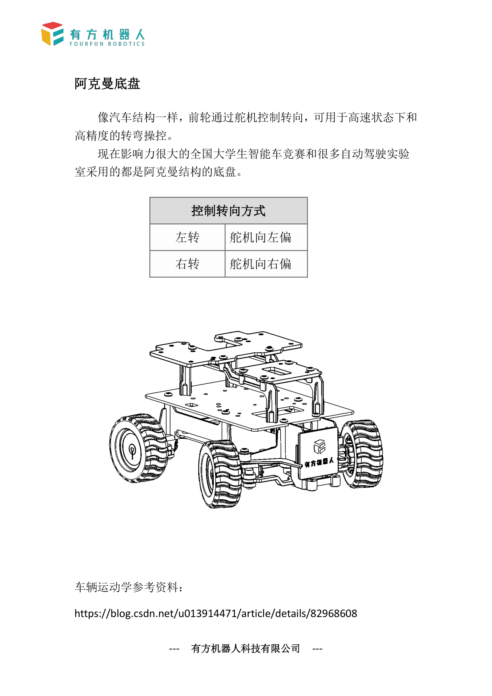
Ackermann Steering Chassis Overview
Mimicking real automotive steering geometry, the Ackermann configuration controls front-wheel steering angles via a dedicated servo motor. This setup provides superior stability during high-speed movement and precise cornering control.
It is widely adopted in National University Student Smart Car Competitions and autonomous driving research labs.
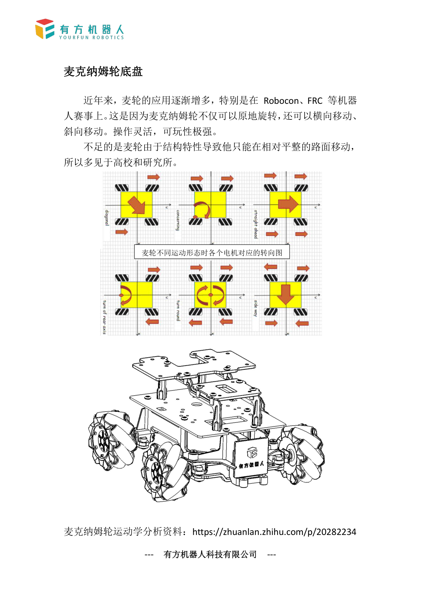
Mecanum Wheel Chassis Overview
Mecanum wheel drive enables full omnidirectional mobility—allowing the robot to move sideways (crab walk), diagonally, and spin in place. It is extensively used in robotics competitions like Robocon and FRC due to its extreme maneuverability.
Note: Requires relatively flat surfaces to maintain roller contact and traction.
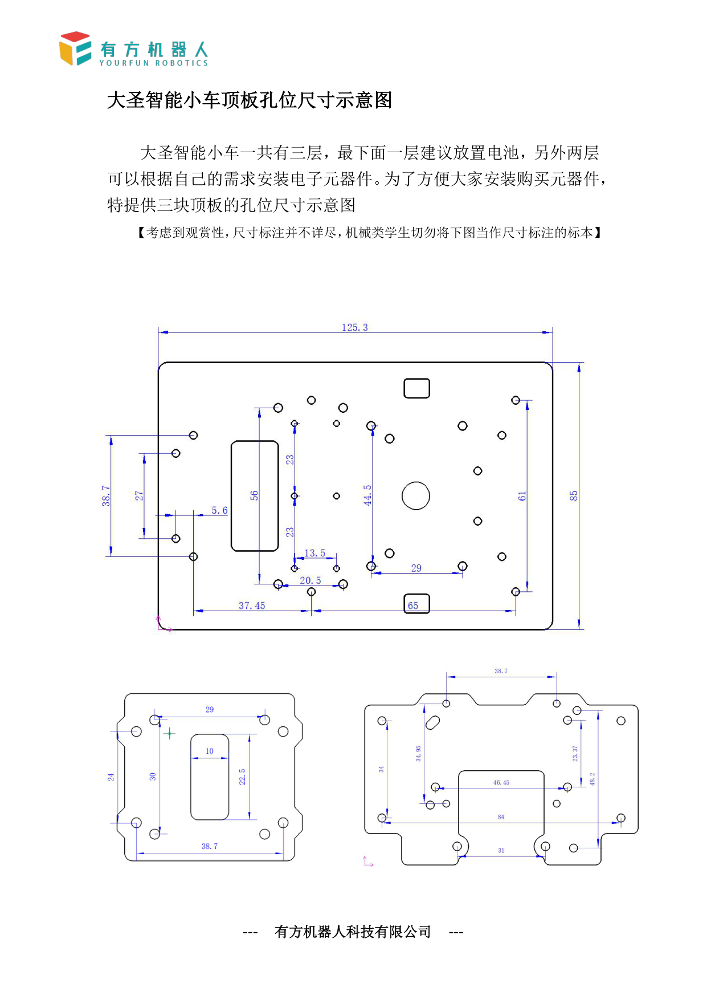
Top Plate Hole Dimension Diagram
The car features a 3-tier structure:
• Bottom Tier: Recommended for battery placement.
• Middle & Top Tiers: Designed with standardized mounting grid holes for electronic controller boards, sensors, and expansion modules.
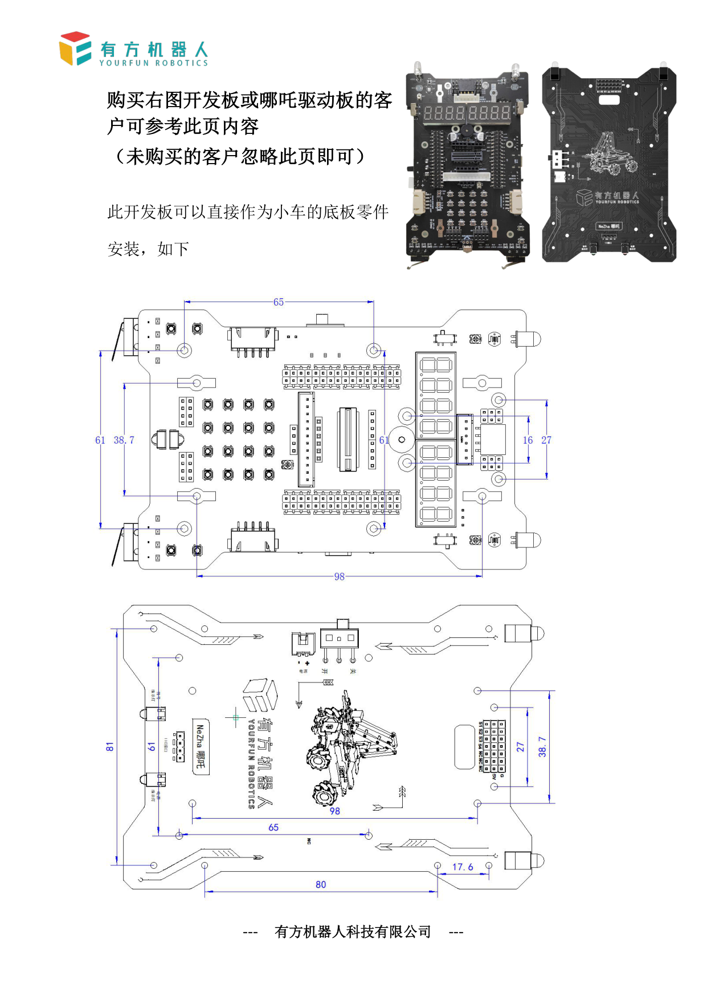
Development Board / Nezha Control Board Direct Mounting
For customers who purchased compatible expansion development boards or Nezha control boards:
The control board can directly serve as the middle structural chassis plate, replacing the standard top flat acrylic piece.
🔩 Packing List & Hardware Guide
Pages 7 – 11
Dual-Form ABS Smart Car Packing List
Kit Components: ABS frame components, acrylic top plate, N20 gear motors x2, wheels, fasteners.
Note: Protective kraft paper covers acrylic parts to prevent scratches. Peel off if a glossy pure black finish is desired.
Fasteners Included:
- M2.5*6 Self-tapping (Black) Main
- M2.5*6 Flat Head (Silver) Linkage
- M2.5*10 Self-tapping (Silver) Motor

Acrylic Robotic Arm Packing List
Kit Components: Precision acrylic arm linkages, claw components, servos, brass standoffs, screws, and nylon lock nuts.
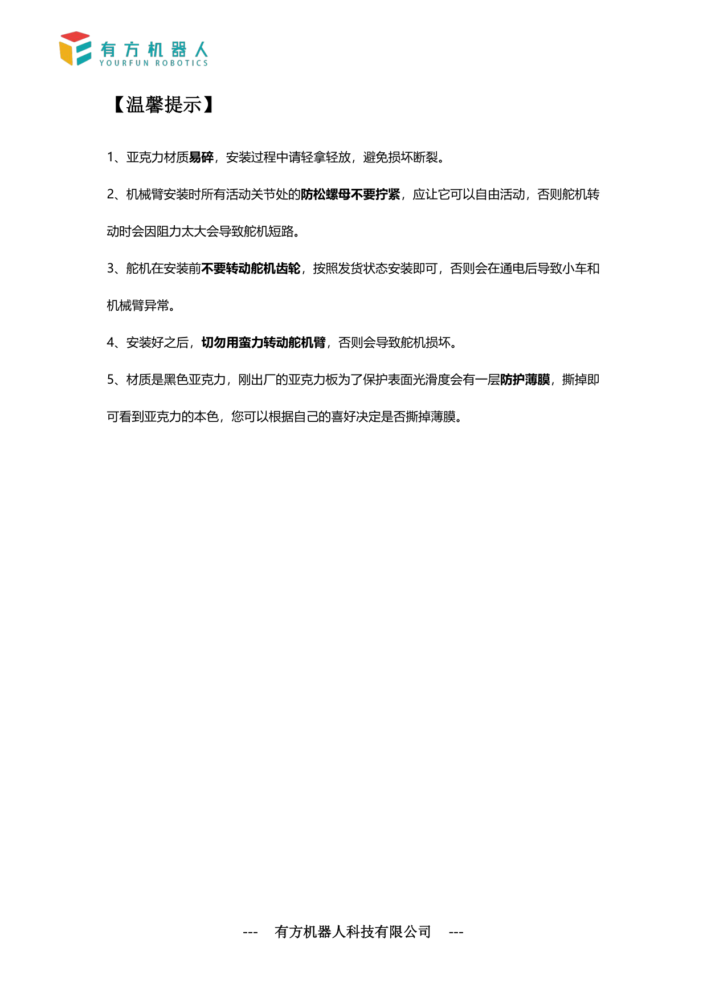
Safety Precautions & Critical Assembly Rules
2. Locknut Friction Rule: DO NOT overtighten nylon locknuts on revolving arm joints! Joints must swing smoothly. Overtightening increases servo resistance and will burn out / short-circuit the servo motor!
3. Servo Neutral Calibration: Do NOT rotate servo horns manually before installation. Power on the servo to let it return to its neutral 90° position before securing servo arms.
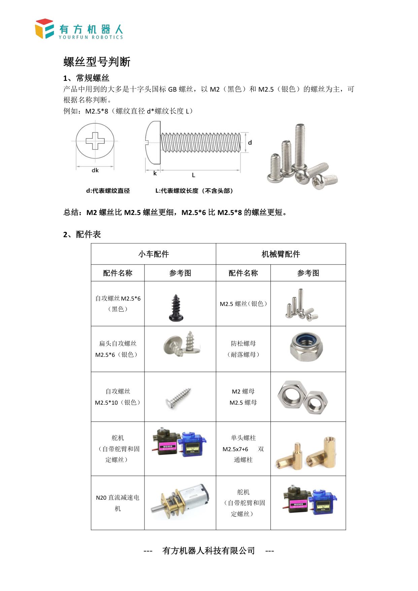
Screw Model Identification & Parts Reference Guide
Most fasteners in this kit are standard GB cross-head (Phillips) screws, primarily categorized into M2 (Black) and M2.5 (Silver).
M [d] * [L]
• d (Thread Diameter): Specifies thread thickness (e.g., M2 = 2.0mm, M2.5 = 2.5mm).
• L (Thread Length): Measured from beneath the screw head to the tip (excluding head height).
• Quick Rule: M2 screws are thinner than M2.5 screws. M2.5*6 screws are shorter than M2.5*8 screws.
2. Comprehensive Parts Reference Matrix:
🚗 Smart Car Accessories
- Self-Tapping Screw M2.5*6 Black
- Pan-Head Self-Tapping M2.5*6 Silver
- Self-Tapping Screw M2.5*10 Silver
- Servo Motor With Horns & Screws
- N20 DC Geared Motor Drive Motor
🦾 Robotic Arm Accessories
- Machine Screw M2.5 Silver
- Nylon Lock Nut Anti-Loosening
- Standard Hex Nut M2 / M2.5
- Brass Standoff M2.5*7+6 Male-Female / Female
- Servo Motor With Horns & Screws
🚗 Part 1: Chassis Assembly
Pages 12 – 24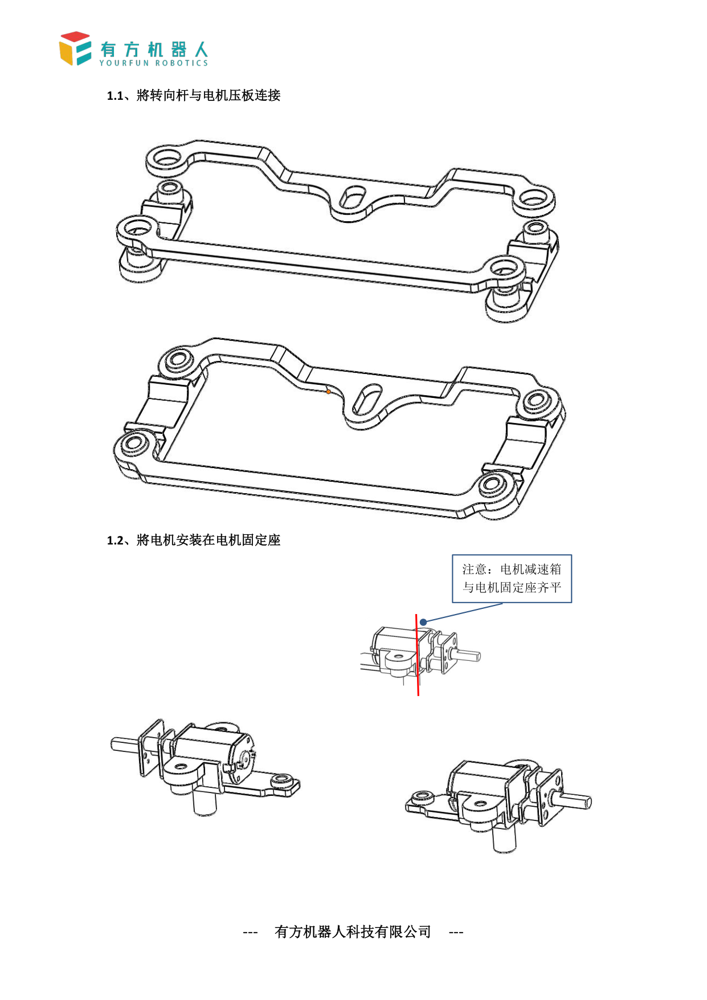
Steering Module: Tie Rod & Motor Seats
Step 1.1: Connect the steering tie rod to the motor pressing plate.
Step 1.2: Install N20 gear motors into the motor mounting seats.
Required Parts:
- ABS Steering Plates x2
- N20 Motors x2
- M2.5*10 Self-tapping (Silver) x4
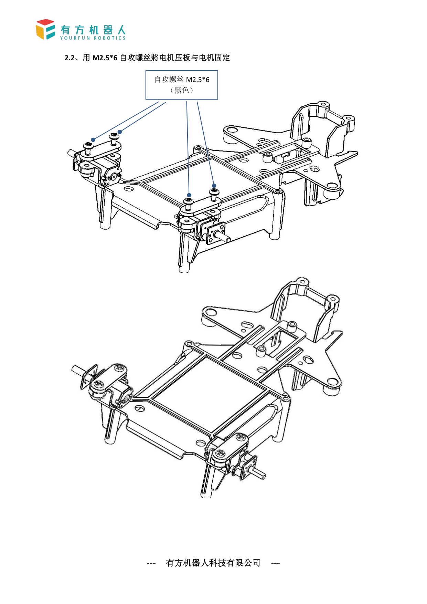
Motor Pressing Plate & Frame Assembly
Step 1.3: Connect the steering pressing plate to the motor seat using M2.5*10 silver self-tapping screws.
Step 2.2: Secure the motor pressing plate with N20 motors using M2.5*6 black self-tapping screws.
Required Parts:
- ABS Frame Base x1
- M2.5*6 Self-tapping (Black) x6
- M2.5*10 Self-tapping (Silver) x4
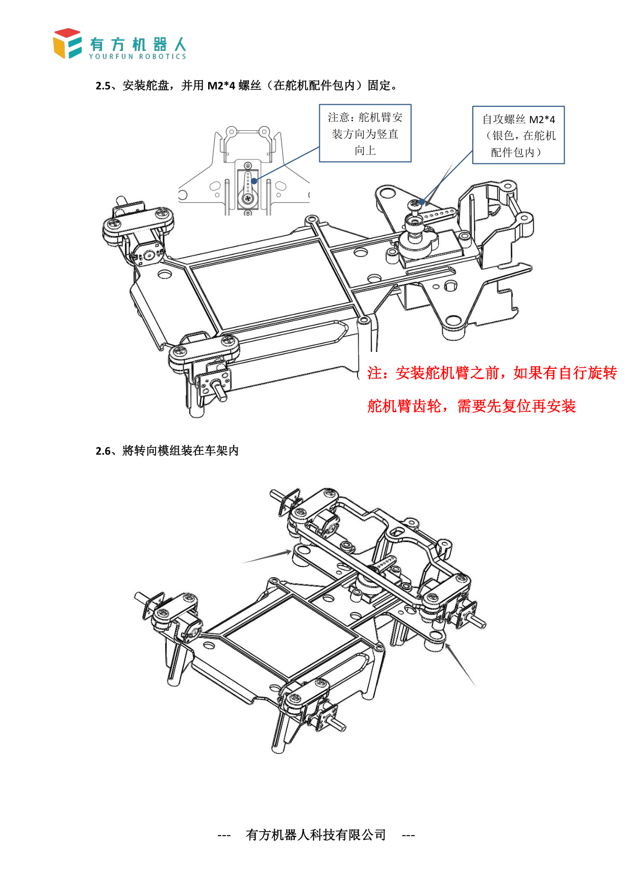
Steering Servo & Steering Module Insertion
Step 2.3 - 2.4: Fit SG90 servo into the chassis slot and secure with M2.5*6 black self-tapping screws.
Step 2.5: Mount single-arm servo horn pointing vertically upward (90°). Fasten with M2*4 screw (silver, inside servo accessory bag).
Step 2.6: Place the assembled steering module into the main frame.
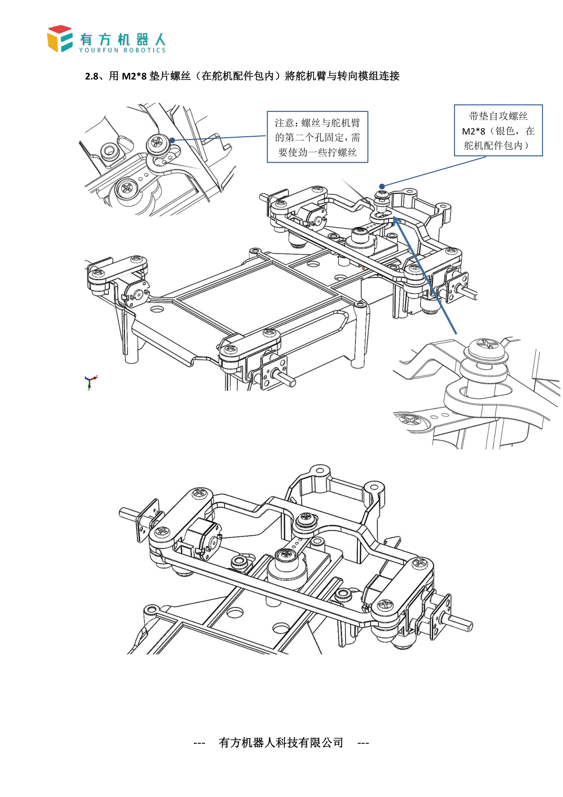
Steering Module Fixation & Linkage Connection
Step 2.7: Fix the steering module using M2.5*6 flat head silver self-tapping screws.
Step 2.8: Connect the servo arm to the steering linkage using M2*8 screw with washer (from servo bag).
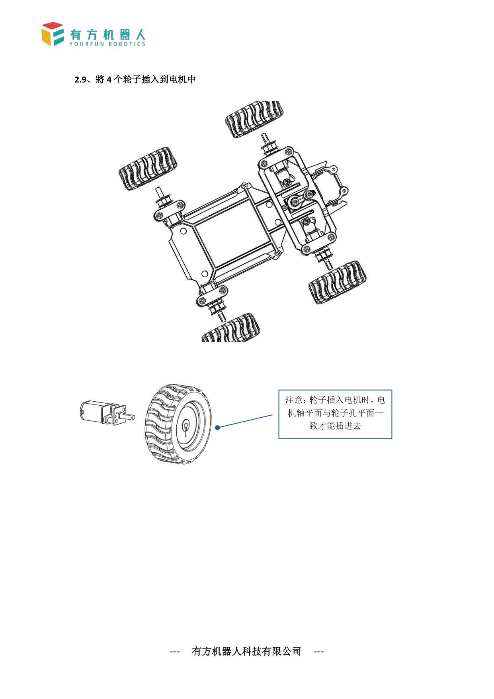
Wheel & Chassis Baffle Installation
Step 2.9: Push the 4 wheels onto the N20 motor output D-shafts.
Step 2.10: Insert side baffles into the chassis frame slots.
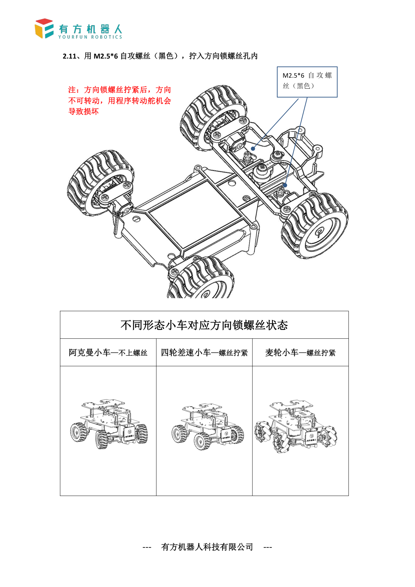
Direction Lock Screw Configuration per Mode
Thread M2.5*6 black self-tapping screw into the direction lock hole according to your desired chassis mode:
Chassis Mode Lock Screw Matrix:
- Ackermann Car NO Screw
- 4-Wheel Differential Tighten Fully
- Mecanum Wheel Tighten Fully
📐 Part 2: Upper Plate & Electronics Mounting
Pages 25 – 33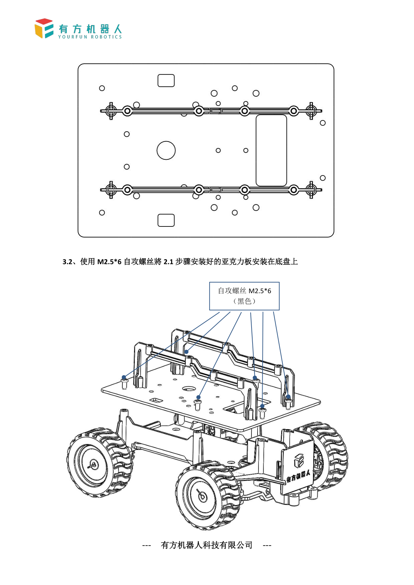
Upper Plate Assembly & Mounting
Step 3.1: Fix ABS side plates to the acrylic top plate using M2.5*6 black self-tapping screws.
Step 3.2: Mount the assembled acrylic upper deck onto the lower chassis using M2.5*6 black self-tapping screws.
Step 3.3: Install front and rear top plates using M2.5*6 black self-tapping screws.
Required Parts:
- Acrylic Top Plate x1
- ABS Side Plates x2
- ABS Front/Rear Plates x2
- M2.5*6 Self-tapping (Black) x16
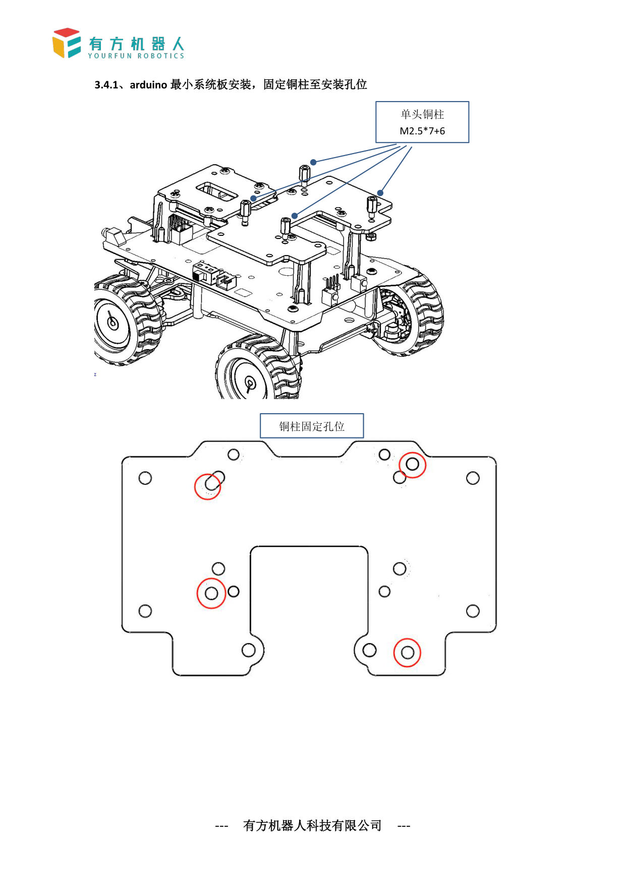
Mainboard & Minimum System Installation
Select the standoff configuration matching your controller board:
Mainboard Mounting Specs:
- Arduino Board M2.5*7+6 Standoffs + Screws
- STC51 Board M2.5*7+6 Standoffs + Screws
- STM32 Board 3M Double-Sided Foam Tape
3.4.1 / 3.5.1: Thread single-head brass standoffs M2.5*7+6 into designated top plate grid holes and secure with M2.5 nuts.
3.4.2 / 3.5.2: Align mainboard mounting holes onto standoffs and secure with M2.5*6 silver screws.
⚙️ Part 3: Mecanum Wheel Installation
Pages 34 – 35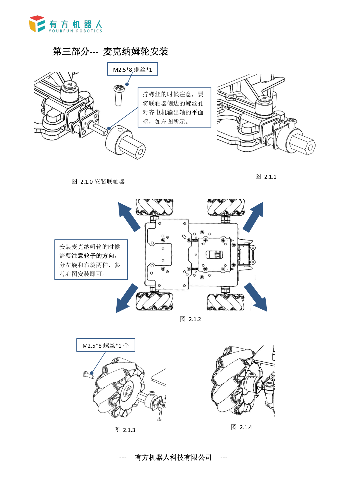
Mecanum Coupler & Roller Orientation Setup
Step 2.1.0 (Coupler): Slide metal coupler onto N20 motor shaft. Align coupler side set screw with motor D-shaft flat side and tighten securely. Fasten wheel using M2.5*8 screw x1 per wheel.
Mecanum Roller Orientation Rule: Mecanum wheels are split into Left-handed (L) and Right-handed (R) roller directions.
🦾 Part 4: Robotic Arm Assembly
Pages 36 – 47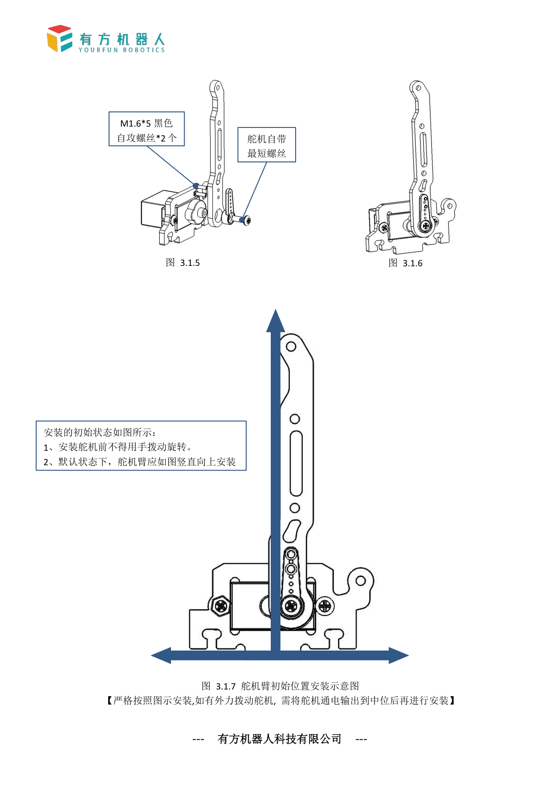
Arm Base Assembly & Servo Initial Neutral Position
Step 3.1.0: Assemble base structural acrylic plates using M2.5*8 screws x2 and M2.5 nuts x2. Pay close attention to servo orientation.
Step 3.1.7 (Servo Horn Neutral): Mount single-arm servo horn in default vertically upward (90°) position.
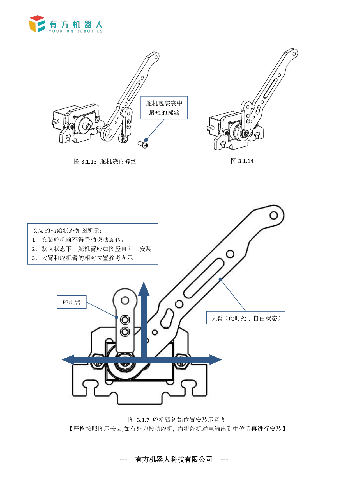
Main Arm Acrylic Linkages & Servo Horn Fixation
Step 3.1.12: Attach small acrylic linkage to servo horn using M1.6*5 black self-tapping screws x2.
Step 3.1.13 - 3.1.14: Verify initial arm state: servo horn vertical, main upper arm in free state. Fasten horn to servo output gear using the shortest screw inside servo bag.
Fasteners Used:
- M1.6*5 Self-tapping (Black) x2
- M2.5*8 Screw x2
- M2.5 Hex Nut x2
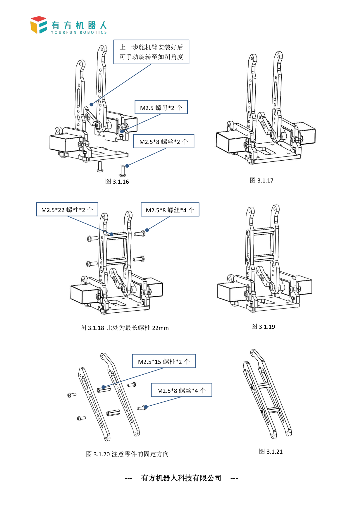
Arm Standoffs & Joint Lock Nut Adjustment
Step 3.1.18: Install 22mm brass standoffs (longest 22mm standoffs) using M2.5*8 screws x4 and M2.5 nuts x2.
Step 3.1.20: Install 15mm brass standoffs using M2.5*8 screws x4.
Step 3.1.22 - 3.1.27 (Joint Linkages): Connect side linkages using M2.5*12 and M2.5*10 screws with Nylon Lock Nuts.
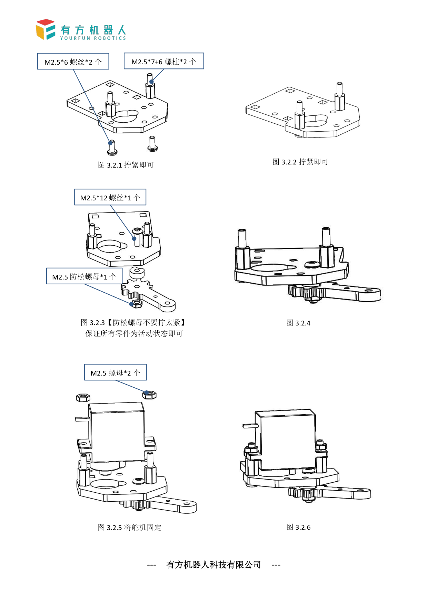
Gripper Claw & End-Effector Assembly
Step 3.2.1 - 3.2.6: Assemble claw frame using M2.5*7+6 brass standoffs x2 and M2.5*6 screws x2. Secure claw servo with M2.5 nuts x2.
Step 3.2.7: Align claw servo horn per diagram angle and secure with longest screw from servo package bag.
Step 3.2.9 - 3.2.12: Assemble claw scissor linkages using M2.5*10 and M2.5*12 screws with Nylon Lock Nuts. Keep all pivot pins loose for low friction.
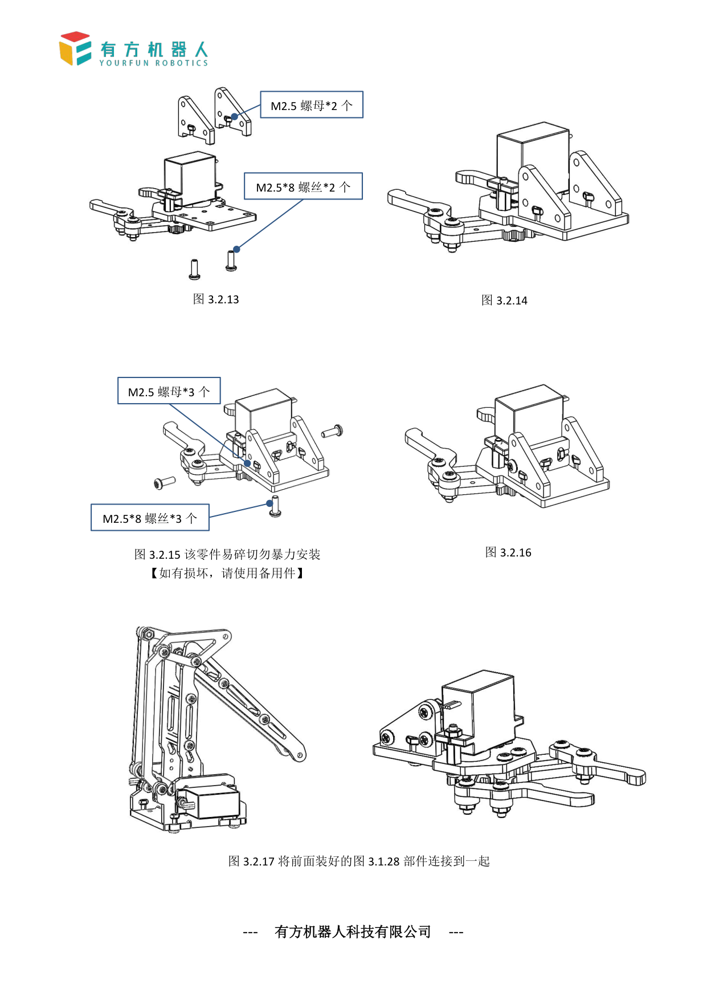
Claw-to-Arm Integration & Final Linkages
Step 3.2.15: Connect the claw assembly to the main arm body using M2.5*8 screws x3 and M2.5 nuts x3.
Step 3.2.23: Install the long actuation linkage rod using M2.5*10 screw x1 and Lock Nuts x2.
🏁 Part 5: Final Vehicle Integration
Pages 48 – 50Mounting Arm on Chassis & Complete Robot Showcase
Page 48: Secure the robotic arm onto the top acrylic chassis deck using M2.5*7+6 brass standoffs x4, M2.5 nuts x4, and M2.5*8 screws x4.
Page 49: Final vehicle configurations:
• Fig 4.1: Rubber Wheel Chassis + Robotic Arm Assembly.
• Fig 4.2: Mecanum Wheel Chassis + Robotic Arm Assembly.
Page 50: Assembly complete! Thank you for using Youfang Robot products.